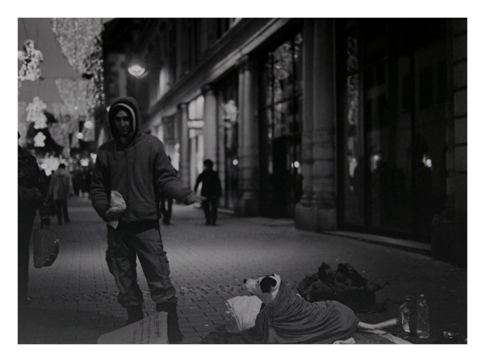

About Me
Hi, I'm Ugur Kostak. I use this website as a personal space for the things I keep coming back to: photographs from the places I walk through, films that stay with me, and small technical or mathematical experiments that help me see patterns more clearly.
What I Pay Attention To
In photography, I am drawn to cities, architecture, travel, and quiet details that are easy to pass by. I like images that leave room for atmosphere instead of explaining everything at once. In cinema, I return to films that keep echoing after the credits: stories about memory, identity, friendship, change, and the strange ways people try to understand each other.
How I Think About Work
My professional side is connected to software, learning, and careful problem-solving. I enjoy work that sits between structure and curiosity: building things, explaining ideas, testing assumptions, and turning abstract concepts into something visible or useful.
Why This Site Exists
This is a notebook more than a portfolio: a place to collect observations, unfinished questions, and the small connections between images, code, mathematics, sound, and storytelling.
Elsewhere
You can also find me on LinkedIn, GitHub, Instagram, X / Twitter, and SoundCloud.